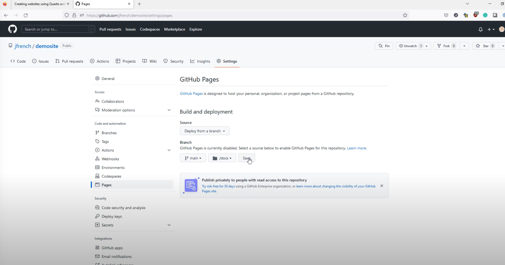

Code
---
title: "My Document"
execute:
echo: false
jupyter: python3
---with magick
---
title: "My Document"
execute:
echo: false
jupyter: python3
---eval： Evaluate the code chunk (if false, just echos the code into the output).
echo： Include the source code in output.
output： Include the results of executing the code in the output (true, false, or asis to indicate that the output is raw markdown and should not have any of Quarto’s standard enclosing markdown).
warning： Include warnings in the output.
error： Evaluate the code chunk (if false, just echos the code into the output).
include： Catch all for preventing any output (code or results) from being included (e.g. include: false suppresses all output from the code block).
library(ggplot2)
ggplot(airquality, aes(Temp, Ozone)) +
geom_point() +
geom_smooth(method = "loess", se = FALSE)add foldableCodeBlcok.lua into blog root folder
add in _quarto.yml
filters: - fold_results.lua
{r, attr.output=‘.details summary=“sessionInfo()”’} #| echo: false sessionInfo()
Terminal
quarto render "tidymodel in R"
---
title: "title"
author: "name"
date: "2024-05-03"
categories: [R,quarto]
execute:
warning: false
error: false
eval: false
format:
html:
toc: true
toc-location: left
code-fold: show
code-tools: true
number-sections: true
code-block-bg: true
code-block-border-left: "#31BAE9"
------
draft: true
---project:
type: website
website:
title: "tidystep"
site-url: https://tidystep.netlify.app/
description: "A blog for data stuff"
favicon: "profile3.png"
google-analytics: "G-2EQK8RFKFX"
navbar:
right:
- about.qmd
- icon: github
href: https://github.com/TonyFly3000
- icon: twitter
href: https://twitter.com/TonyJCD
- icon: rss
href: index.xml
page-footer:
right: "This blog is built with ❤️ and [Quarto](https://quarto.org/)."
format:
html:
theme:
light: flatly
dark: darkly
css: styles.css
grid:
body-width: 1100px
margin-width: 300px
gutter-width: 1.5rem
editor: visual
execute:
freeze: true---
title: "微步数据"
listing:
page-size: 8
contents: posts
sort: "date desc"
type: default
categories: true
sort-ui: true
filter-ui: false
fields: [image, date, title, author,categories]
feed: true
page-layout: full
title-block-banner: true
---draft:trueyou need to have quarto pub account https://quartopub.com/
quarto publish quarto-pub_quarto.yml
#| eval: false
project:
type: website
output-dir: docs

The github site is created: https://your_github_name.github.io/repository_name/
In mac using {shift+command+.} to show hidden .gitignore file
for example,add *.parquet in .gitignore file to ignore all parquet file
.gitignore
#| eval: false
.Rproj.user
.Rhistory
.RData
.Ruserdata
/.quarto/
*.parquet